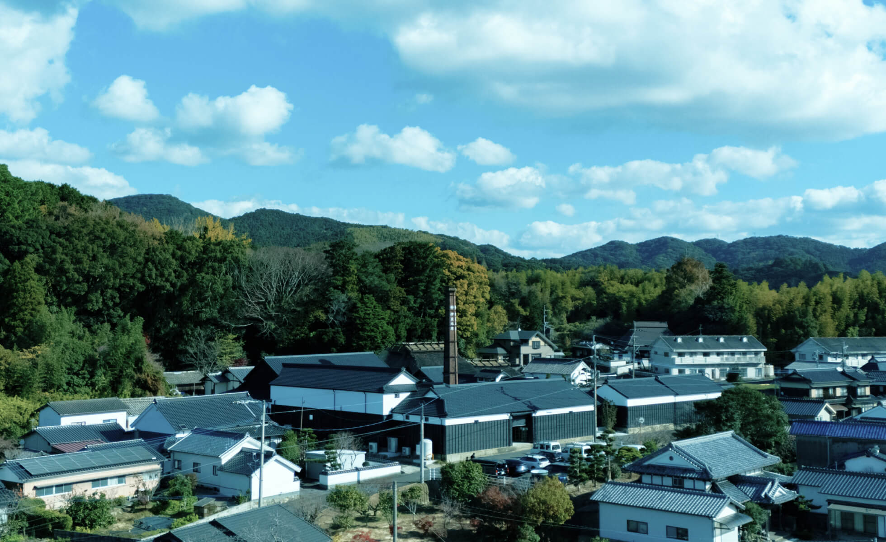
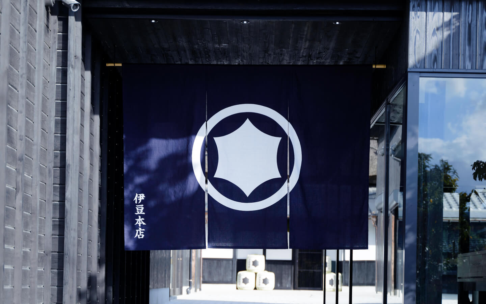
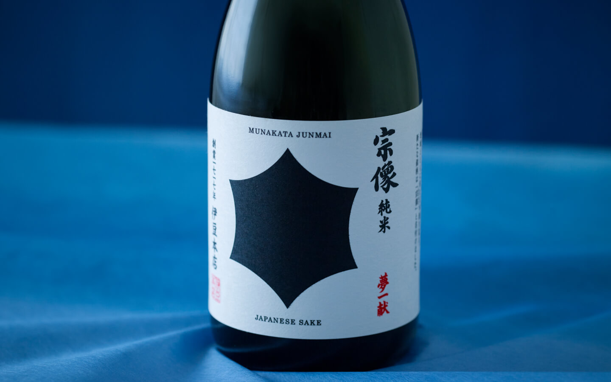
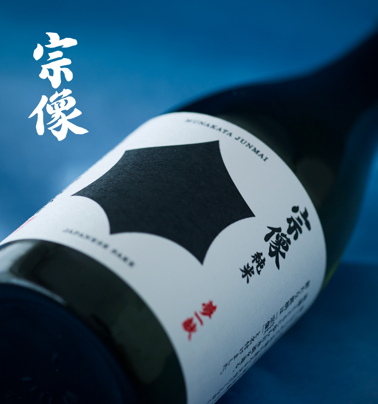
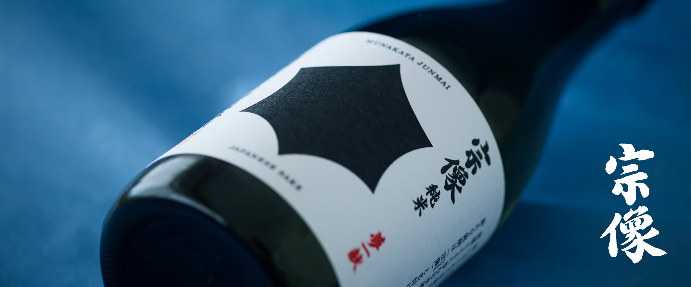
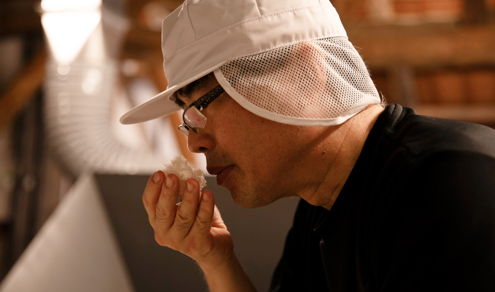

ひとしずくに、
物語を。
風土の恵みを、五感で醸す。
素材に導かれながら行う酒造りは、
ひとつひとつ物語があります。
その一滴が、味わう人のこころに。
新銘柄「宗像」
大切な人と囲む食卓に、ささやかな彩りを。

伊豆本店について
About us

伊豆本店の歩み
煉瓦造りの煙突、茅葺き屋根。一七一七年、世界遺産の地 神宿る福岡・宗像で創業しました。三百余年の歴史を礎に、蔵を再興しています。

日本酒「宗像」
地域とともに歩む日本酒を造るー。
その想いを込めて、新しい銘柄を「宗像」と命名。神さまとのご縁が深い土地で山々を巡った地下水と、地元の酒米などで仕込みます。オンラインでもご購入いただけます。

福岡 宗像 酒蔵 伊豆本店
「福岡 宗像 酒蔵 伊豆本店」は、田畑広がるのどかな宗像市の東部にございます。酒蔵見学ができる「醸造蔵」、酒粕を使った饅頭などを販売する「甘味」、茅葺き屋根のお買い物施設「直売所」などお楽しみいただけます。伝統的な槽搾り製法で用いた設備を再活用した「酒蔵BAR」では、上質な空間で酒肴とのペアリングをご用意しています。ごゆっくりとお過ごしください。
商品一覧
Item List


宗像 特別純米 山田錦
酒米の王様と言われる山田錦の品格を感じるエレガントさ。花のような香りが広がり、余韻が長く続きます。うまみ・甘味が豊かで気品のある味わいです。
【精米歩合】60％ 【酒米産地】福岡・宗像
宗像 純米 夢一献
味のふくらみや奥ゆきなど、重層的な味の表情を大切に仕込みました。〝甘・辛・酸・旨・苦〞のバランスがよく、 口に含むと、華やかな香りが鼻を抜けます。 飲み口もやさしく、なめらかです。
【精米歩合】70％ 【酒米産地】福岡・宗像
宗像 特別純米 寿限無
軽快な甘い香りと、辛口のようなすっきり感。キレのいい後味です。米、仕込み、麹の奇遇な巡り合わせから、想像を超えた味わいが生まれました。熟練の杜氏が酒造りのおもしろさを改めて感じたお酒です。
【精米歩合】60％ 【酒米産地】福岡・宗像

酒造りのこだわり
ひとしずくに物語を。米や麹に導かれながら自然に醸すことが伊豆本店の酒造りです。